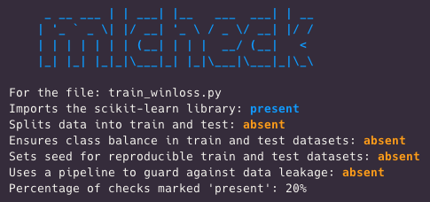

# mlcheck --path path/to/your_file_name.py
Why create mlcheck?
mlcheck exists because we’re all human, and remembering to follow ML best practices is hard. Even when we already know what a good workflow looks like. Even when we’ve been coding for years. And especially when we think we don’t need a double-check.
mlcheck is a Rust-based command line tool that can programmatically check for the presence of ML best practices in coding documents. You can feed it a single file path or a folder full of files
# mlcheck --path path/to/folder/
The current version of the tool can detect scikit-learn style Python code in .py or .ipynb1 files.2
Think of mlcheck as a spell-check equivalent for ML best practices. Spell-check can help keep us from making silly mistakes, and it’s still a somewhat faulty warning light that will miss corner cases.
What is mlcheck for?
I primarily see this tool as a way to check myself. The idea for mlcheck came to me after I realized I’d forgotten to set a random_state to make my train/test split reproducible!
And I was still curious how often these ML best practices get used in the wild.
So, I created a shell script to download a couple hundred+3 .py files from Github that contain “sklearn”
I used this pattern as a rough proxy for people implementing scikit-learn style Python code.
After downloading all those files, I ran mlcheck on the entire folder with one command line call.
Here’s what mlcheck’s output looks like on the command line for a single file:

What were the results?
First, this tool absolutely did not have to be in Rust4, and wow was this implementation fast.
According to a SQL query on the database created by running the checks, mlcheck performed all the best practice checks across hundreds of files in 0.94 seconds.
And best-practice usage was by no means universal. Another SQL query showed that while at least one file passed 100% of the best-practice checks, the average for checks passed was just 33.48%.
This average is even more remarkable when you consider the minimum percentage of checks passed was 20%. After all, one of the checks is whether sklearn is detected or not, and unless I messed up the original shell script passing that check was guaranteed.
I don’t want to pretend this group of files is a representative sample, and people could use these code files in situations where best practices are unnecessary.
And I know I’ve skipped past best practices because “I know what I’m doing!” I’m not alone in that boat.
If you’re interested in checking out the demo, the entire repo is here
What if I want to use mlcheck?
If you’re interested in using mlcheck check out its repo here for installation and usage instructions. This tool is still pretty new so there’s definitely a chance of breaking changes. However, I know this tool has already saved me at least once, and I want others to have that opportunity as well.
Footnotes
Jupyter notebooks, which btw have the wildest file extension↩︎
tidymodels style code in .R, .Rmd, and .qmd files is on the roadmap↩︎
I ran into Github rate limits going much higher than that at once, and even still didn’t always get a consistent number of downloads using a lower number.↩︎
I wanted to learn more Rust and used this project as an excuse!↩︎